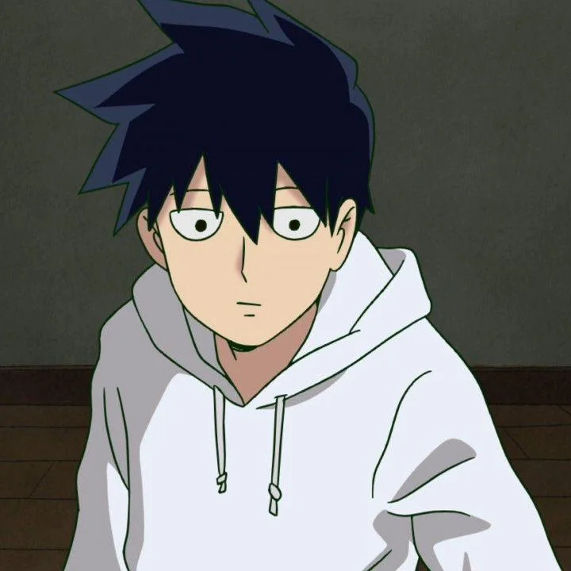

Ritsu Kageyama é o irmão prodígio de Mob que, apesar de sua inteligência e popularidade, esconde um profundo complexo de inferioridade e o desejo obsessivo de despertar seus próprios poderes psíquicos.

Para mais informações, acesse esse link da wiki.
>VoltarSite desenvolvido pelo aluno Bryan Gabriel do IFTM-Campus Patrocínio.